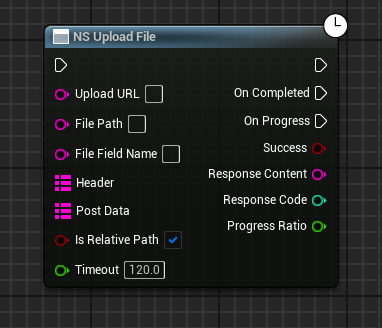
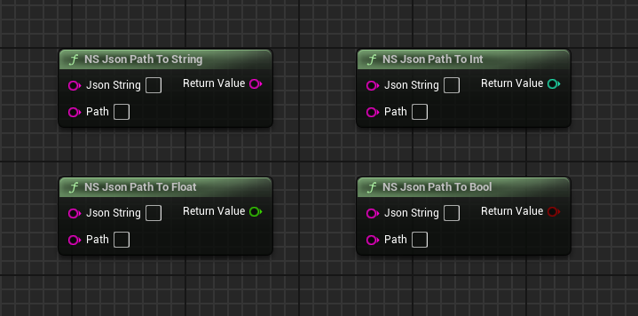
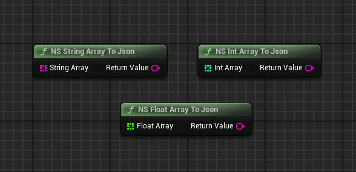

🛠️ NS_HttpJson 插件 使用指南
欢迎使用本插件！以下是蓝图节点讲解，帮助您快速集成 UE 通信功能。
通用 HTTP 请求节点详解 (NS Send HTTP Request)
这是一个通用的 HTTP 请求节点，支持 GET, POST 等多种请求类型，以及自定义 Header 和请求体数据。
蓝图节点图：

输入参数 (Input) - 左侧引脚
| 参数名称 | 数据类型 | 用途描述 |
|---|---|---|
| 执行引脚 (顶端) | Exec | **触发** HTTP 请求发送。 |
| URL | String | **必填：** 目标 Web 服务器的完整 URL 地址。 |
| Request Type | Enum | 选择请求类型，支持 **GET**, **POST**, **PUT**, **DELETE** 等常见 HTTP 方法。 |
| Header | Map<String, String> | 可选：用于设置自定义 HTTP 头信息，例如 `Content-Type`, `Authorization` 等。 |
| Post Data | String | 当 Request Type 为 POST 或 PUT 时，用于携带发送给服务器的请求体内容（Payload），通常是 JSON 字符串。 |
| Timeout | Float | 请求超时时间（秒）。默认值 120.0 秒。 |
输出参数 (Output) - 右侧引脚
| 参数名称 | 数据类型 | 用途描述 |
|---|---|---|
| On Completed | Exec | HTTP 请求**完成**（无论成功收到响应或失败）时触发的执行引脚。 |
| Response Json | String | 服务器返回的原始响应内容，通常为 JSON 格式的字符串。 |
| Response Code | Integer | 服务器返回的 HTTP 状态码（例如：200 表示成功，404 表示未找到）。 |
文件下载节点详解 (NS Download File)
该节点用于从指定的 URL 下载文件，支持进度跟踪、路径相对性设置和超时控制。
蓝图节点图：

输入参数 (Input) - 左侧引脚
| 参数名称 | 数据类型 | 用途描述 |
|---|---|---|
| 执行引脚 (顶端) | Exec | **触发**文件下载任务的开始。 |
| Download URL | String | **必填：** 文件的完整下载链接地址（HTTP 或 HTTPS）。 |
| Save Path | String | **必填：** 文件下载后保存到的目录或完整路径。 |
| Is Relative Path | Boolean | 勾选 (True) 表示 Save Path 是相对于游戏根目录的相对路径；取消勾选 (False) 表示为绝对路径。 |
| Timeout | Float | 请求超时时间（秒），默认 120.0 秒。超过此时间未完成则任务失败。 |
| File Name Alias | String | 可选：为下载的文件指定一个**新的文件名**，会覆盖 URL 中的原始文件名。 |
输出参数 (Output) - 右侧引脚
| 参数名称 | 数据类型 | 用途描述 |
|---|---|---|
| On Completed | Exec | 文件下载任务结束（无论成功或失败）时触发的执行引脚。 |
| On Progress | Exec | 在文件下载过程中**持续触发**，用于更新进度条。 |
| Success | Boolean | 布尔值：表示文件是否**成功**下载。 |
| Saved File Path | String | 文件最终保存的**完整绝对路径**。 |
| File Name | String | 下载后文件的最终名称（可能使用了 Alias）。 |
| Progress Ratio | Float | 当前的下载进度比率，范围从 **0.0 到 1.0**。 |
文件上传节点详解 (NS Upload File)
该节点专用于将本地文件以多部分表单数据的形式上传至 Web 服务器，支持进度跟踪、自定义 Header 和额外表单数据。
蓝图节点图：
输入参数 (Input) - 左侧引脚
| 参数名称 | 数据类型 | 用途描述 |
|---|---|---|
| 执行引脚 (顶端) | Exec | **触发**文件上传任务开始。 |
| Upload URL | String | **必填：** 服务器端接收文件上传的 API 地址。 |
| File Path | String | **必填：** 待上传的本地文件的完整绝对或相对路径。 |
| File Field Name | String | **必填：** 文件在 HTTP 表单中对应的字段名称（例如：`file` 或 `my_asset`）。 |
| Header | Map<String, String> | 可选：用于添加自定义 HTTP 头信息，如认证 Token。 |
| Post Data | Map<String, String> | 可选：除了文件本身外，需要随请求一同发送的**额外表单数据**（例如：用户ID, 文件描述）。 |
| Is Relative Path | Boolean | 勾选 (True) 表示 File Path 是相对于游戏根目录的路径。 |
| Timeout | Float | 请求超时时间（秒）。 |
输出参数 (Output) - 右侧引脚
| 参数名称 | 数据类型 | 用途描述 |
|---|---|---|
| On Completed | Exec | 文件上传任务**结束**（成功或失败）时触发的执行引脚。 |
| On Progress | Exec | 文件上传过程中**持续触发**，用于更新进度条。 |
| Success | Boolean | 布尔值：表示文件是否**成功**上传。 |
| Response Content | String | 服务器返回的原始响应内容（通常是上传结果的 JSON 反馈）。 |
| Response Code | Integer | 服务器返回的 HTTP 状态码。 |
| Progress Ratio | Float | 当前的上传进度比率，范围从 **0.0 到 1.0**。 |
数据类型转换节点详解 (NS Json Value To [Type])
这组节点用于从原始 JSON 字符串中，根据键 (Key) 提取出对应的值，并自动将其转换为蓝图所需的基本数据类型，是处理服务器响应的核心工具。
蓝图节点图：
![NS Json Value To [Type] 蓝图节点组截图](getvalue.png)
通用输入参数 (Input) - 适用于所有四个节点
| 参数名称 | 数据类型 | 用途描述 |
|---|---|---|
| Json String | String | **必填：** 需要解析的 JSON 字符串。通常连接自 HTTP 请求节点的 Response Content 输出。 |
| Key | String | **必填：** 您希望从 JSON 字符串中提取其对应值的键名（例如：要获取 {"user_id": 123} 中的值，Key 填 `user_id`）。 |
输出参数 (Output) - 各节点返回值详解
| 节点名称 | 返回值类型 | 用途描述 |
|---|---|---|
NS Json Value To String |
String | 将指定 Key 对应的值提取并转换为**字符串**。 |
NS Json Value To Int |
Integer | 将指定 Key 对应的值提取并转换为**整数**。适用于处理 ID、计数等。 |
NS Json Value To Float |
Float | 将指定 Key 对应的值提取并转换为**浮点数**。适用于处理价格、坐标等。 |
NS Json Value To Bool |
Boolean | 将指定 Key 对应的值提取并转换为**布尔值** (True/False)。适用于处理状态旗标。 |
JSON Path 深层数据提取节点详解 (NS Json Path To [Type])
这组节点是 JSON 解析的高级用法，允许您使用**点语法 (Path)** 直接访问 JSON 结构中的深层嵌套数据，无需多步解析。这极大地简化了复杂 JSON 数据的处理流程。
蓝图节点图：
通用输入参数 (Input) - 适用于所有四个节点
| 参数名称 | 数据类型 | 用途描述 |
|---|---|---|
| Json String | String | **必填：** 需要解析的 JSON 字符串。通常连接自 HTTP 请求节点的 Response Content 输出。 |
| Path | String | **必填：** 使用点语法表示的 JSON 路径。例如，要从 {"user": {"info": {"name": "Test"}}} 中获取名字，Path 应填
`user.info.name`。 |
输出参数 (Output) - 各节点返回值详解
| 节点名称 | 返回值类型 | 用途描述 |
|---|---|---|
NS Json Path To String |
String | 根据 Path 提取值并转换为**字符串**。 |
NS Json Path To Int |
Integer | 根据 Path 提取值并转换为**整数**。 |
NS Json Path To Float |
Float | 根据 Path 提取值并转换为**浮点数**。 |
NS Json Path To Bool |
Boolean | 根据 Path 提取值并转换为**布尔值**。 |
Return Value |
(对应类型) | 成功解析时返回的最终值。 |
JSON 数组提取节点详解 (NS Json Value/Path To Array)
这组节点用于处理 JSON 结构中的数组数据。无论是简单键值还是深层路径，它们都能将数据转换为蓝图中的数组变量，支持 String, Int 和 Float 三种数组类型。
蓝图节点图：

输入参数 (Input) - 通用
| 参数名称 | 适用节点 | 数据类型 | 用途描述 |
|---|---|---|---|
| Json String | 所有 | String | **必填：** 包含目标数组数据的 JSON 字符串。 |
| Key | Value To Array (上排) | String | **必填：** 目标数组在 JSON 中的直接键名。 |
| Path | Path To Array (下排) | String | **必填：** 使用点语法表示的 JSON Path，指向目标数组的位置（例如：data.scores.list）。 |
输出参数 (Output) - 各节点返回值详解
| 节点名称 | 返回值类型 | 用途描述 |
|---|---|---|
NS Json Value To Array (String) |
String Array | 根据 Key 提取数组，并将所有元素转换为**字符串数组**。 |
NS Json Value To Array (Int) |
Integer Array | 根据 Key 提取数组，并将所有元素转换为**整数数组**。 |
NS Json Value To Array (Float) |
Float Array | 根据 Key 提取数组，并将所有元素转换为**浮点数数组**。 |
NS Json Path To Array (String) |
String Array | 根据 Path 提取数组，并将所有元素转换为**字符串数组**。 |
NS Json Path To Array (Int) |
Integer Array | 根据 Path 提取数组，并将所有元素转换为**整数数组**。 |
NS Json Path To Array (Float) |
Float Array | 根据 Path 提取数组，并将所有元素转换为**浮点数数组**。 |
- 这组节点专为处理 JSON 数组 (例如：`"scores": [10, 20, 30]`) 设计。
- 如果 Key/Path 存在但对应值不是数组，或者类型转换失败，节点将返回一个**空数组**。
JSON 数据构建节点详解 (NS Map To Json)
该节点是 JSON 制作的核心工具。它将蓝图中的 **Map<String, String>** 结构快速、高效地序列化为符合 HTTP 请求体要求的 JSON 格式字符串，用于 POST 或 PUT 请求的数据提交。
蓝图节点图：

输入参数 (Input) - 左侧引脚
| 参数名称 | 数据类型 | 用途描述 |
|---|---|---|
| Map | Map<String, String> | **必填：** 包含键值对的 Map 变量。Map 的 Key 会成为 JSON 的字段名，Value 会成为 JSON 的字段值。 |
输出参数 (Output) - 右侧引脚
| 参数名称 | 数据类型 | 用途描述 |
|---|---|---|
| Return Value | String | 返回序列化后的 JSON 格式字符串。 |
- 如果您输入一个 Map:
{"user_id": "101", "score": "95.5"} - 节点将输出 JSON 字符串:
{"user_id": "101", "score": "95.5"}
JSON 数组字符串转换节点详解 (NS Json Array To String Array)
该节点用于处理特殊的 JSON 数组字符串，它直接将一个包含纯字符串元素的 JSON 数组（例如：["key1", "key2", "key3"]）整体转换为蓝图中的 String Array
变量。
蓝图节点图：

输入参数 (Input) - 左侧引脚
| 参数名称 | 数据类型 | 用途描述 |
|---|---|---|
| Json Array String | String | **必填：** 包含 JSON 格式数组的字符串。注意：该字符串必须是以 `[` 和 `]` 包裹的有效数组结构。 |
输出参数 (Output) - 右侧引脚
| 参数名称 | 数据类型 | 用途描述 |
|---|---|---|
| Return Value | String Array | 返回转换后的**字符串数组**。如果输入无效或格式错误，则返回一个空数组。 |
- 适用于服务器直接返回一个不包含键名的纯数组字符串的特殊接口。
- 示例输入：
["apple", "banana", "cherry"]。
JSON 数组制作节点详解 (NS [Type] Array To Json)
这组节点用于将蓝图中的各种基本类型数组（String, Int, Float）快速转换为 JSON 数组字符串。这是在上传数据时构建复杂数组结构（例如批量ID、得分列表）的理想选择。
蓝图节点图：
输入参数 (Input) - 适用于所有三个节点
| 参数名称 | 数据类型 | 用途描述 |
|---|---|---|
| String Array | String Array | **必填：** 需要转换为 JSON 字符串的字符串数组（仅限 `NS String Array To Json`）。 |
| Int Array | Integer Array | **必填：** 需要转换为 JSON 字符串的整数数组（仅限 `NS Int Array To Json`）。 |
| Float Array | Float Array | **必填：** 需要转换为 JSON 字符串的浮点数数组（仅限 `NS Float Array To Json`）。 |
输出参数 (Output) - 各节点返回值详解
| 节点名称 | 返回值类型 | 用途描述 |
|---|---|---|
NS String Array To Json |
String | 返回 String Array 序列化后的 JSON 字符串（例如：["item1", "item2"]）。 |
NS Int Array To Json |
String | 返回 Int Array 序列化后的 JSON 字符串（例如：[10, 20, 30]）。 |
NS Float Array To Json |
String | 返回 Float Array 序列化后的 JSON 字符串（例如：[1.5, 2.5]）。 |
- 这些节点的返回值（JSON String）通常作为子值，嵌套进
NS Map To Json节点的 **Map** 中，用于构建复杂的请求体。 - 例如，使用
NS String Array To Json生成的字符串可以作为 Map 的一个 Value 字段发送。
通过理解每个引脚的作用，您可以更精确地控制数据流和错误处理。